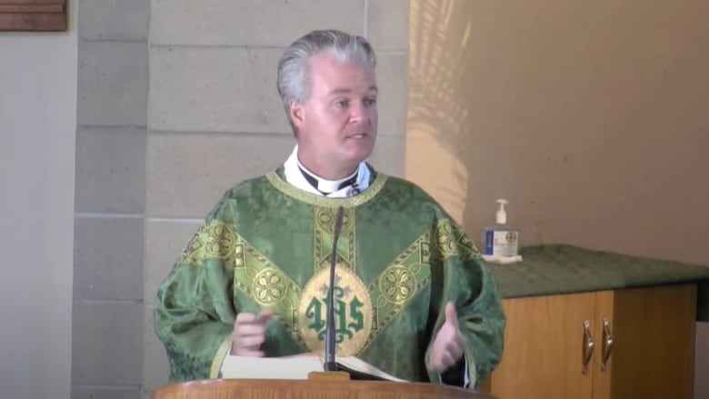
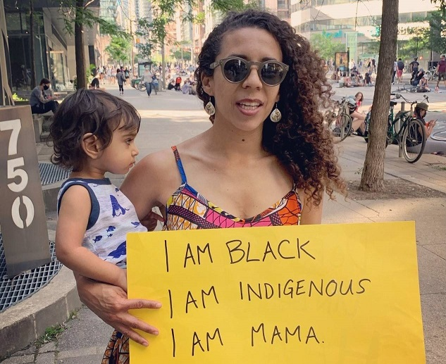

Residential Schoolocaust - A happening
June 26th, 2021
For a little backstory. Apparently there were claims that 215 dead Abo children were found at a Kamloops Indian Residential School. I say claims, because they found precisely zero dead bodies. What they did instead was use "ground based radar," to find areas of the ground that could maybe possibly be a dead childs grave. They could also be a years old gopher hole, a spot dug up by a fox, or literally any other reason why some ground might be slightly disturbed, but they're going with "dead abo child," because reasons.
Of course, even if there were unmarked graves, that means little to nothing.
Fast forwards to a few days ago.
CBC:
TDC_ARTICLE_START
A Mississauga, Ont., priest is under fire after a sermon referencing the "good done" by the Roman Catholic Church in residential schools, saying some might go so far as to even thank it.
TDC_ARTICLE_STOP
Owen Keenan
I think I'm starting to like this goy.
TDC_ARTICLE_START
"Two-thirds of the country is blaming the church, which we love, for the tragedies that occurred there," he said on a video originally posted to the church's YouTube page but since deleted. Clips of his sermon continue to circulate on social media.
"I presume the same number would thank the church for the good done in those schools, but of course, that question was never asked and we are not allowed to even say that good was done there. I await to see what comes to my inbox."
TDC_ARTICLE_STOP
 Indeed. After all, as many have pointed out, it is indubitably true that the child mortality rate in these schools was lower than what it was back at their tribes. And how dare those White People, checks notes, teach these kids how to read and write and do basic math? How absolutely dare you?
TDC_ARTICLE_START
Mississauga Mayor Bonnie Crombie, a practising Catholic, said she was "extremely disappointed" by her pastor's comments about residential schools.
Reading from a prepared statement at a news conference Thursday, the mayor called Keenan's homily "deeply insensitive to Indigenous Canadians, particularly at a time when Indigenous communities are in pain as they unearth more mass graves at the sites of former residential schools."
TDC_ARTICLE_STOP
Indeed. After all, as many have pointed out, it is indubitably true that the child mortality rate in these schools was lower than what it was back at their tribes. And how dare those White People, checks notes, teach these kids how to read and write and do basic math? How absolutely dare you?
TDC_ARTICLE_START
Mississauga Mayor Bonnie Crombie, a practising Catholic, said she was "extremely disappointed" by her pastor's comments about residential schools.
Reading from a prepared statement at a news conference Thursday, the mayor called Keenan's homily "deeply insensitive to Indigenous Canadians, particularly at a time when Indigenous communities are in pain as they unearth more mass graves at the sites of former residential schools."
TDC_ARTICLE_STOP
Bonnie Crombie
Politician reads prepared statement written by their (((masters))). So one of her donors told her to say this.
TDC_ARTICLE_START
Dr. Suzanne Shoush, who is Indigenous, works for the Catholic-run health network Unity Health Toronto. She is demanding the Pope apologize for the church's role in residential schools. She said comments like those made by Keenan are damaging to reconciliation and exemplify why Catholic leaders need to intervene.
"This is part of the reason why we keep pushing to have a formal asking of forgiveness to Indigenous people in Canada from the Pope himself," she said.
"It's really critical that it comes from the leadership so that we stop having these incredibly ignorant and harmful comments coming from across the church. I think that what we're seeing is extremely harmful to reconciliation."
Dr Suzanne Shoush
Keenan also said in his sermon that while the church should apologize for its participation in the "ill-devised government project," it should also wait to find out who was buried at the Kamloops site and why before "rendering ultimate judgment."
During a mass on June 6, Keenan said the discovery was "very sad" and a symbol of the "ongoing tragedy" of government policies against Indigenous people, but also that:
"We don't know how those children died. We don't know, we can't know, if they would've died if they stayed at home."
While he called for prayers and reconciliation, he also said, "Many people had very positive experiences of residential schools. Many people received health care and education and joyful experiences.
"They weren't universally awful. But there's still no place for the horrors that are alleged to have occurred there."
TDC_ARTICLE_STOP
Looks like a reasonable and measured statement. Thank god we have the multi billion dollar state propaganda outlet to contextualize this for us.
TDC_ARTICLE_START
In the same sermon, Keenan criticized Catholic schools for flying Pride flags this month, saying the church had hoped they'd show "courage" by displaying a cross or sacred heart instead. He described the Pride flag as "the standard of contemporary sexual licence" that's replacing Catholic symbols.
Keenan did not respond to questions from CBC News about his comments toward the LGBTQ community.
Crombie said she told Keenan his comments have no place in the city of Mississauga.
TDC_ARTICLE_STOP

Not a relevant picture, I just like it.
Of course. I like this Keenan guy. Kind of has that useless conservative instinct, but it's still refreshing to see. And of course, never talk to the Propagandists.

Indeed. After all, as many have pointed out, it is indubitably true that the child mortality rate in these schools was lower than what it was back at their tribes. And how dare those White People, checks notes, teach these kids how to read and write and do basic math? How absolutely dare you?
TDC_ARTICLE_START
Mississauga Mayor Bonnie Crombie, a practising Catholic, said she was "extremely disappointed" by her pastor's comments about residential schools.
Reading from a prepared statement at a news conference Thursday, the mayor called Keenan's homily "deeply insensitive to Indigenous Canadians, particularly at a time when Indigenous communities are in pain as they unearth more mass graves at the sites of former residential schools."
TDC_ARTICLE_STOP